Antes de falar de inteligência artificial, precisamos combinar o que entendemos por inteligência.
Como você definiria inteligência? 🤔
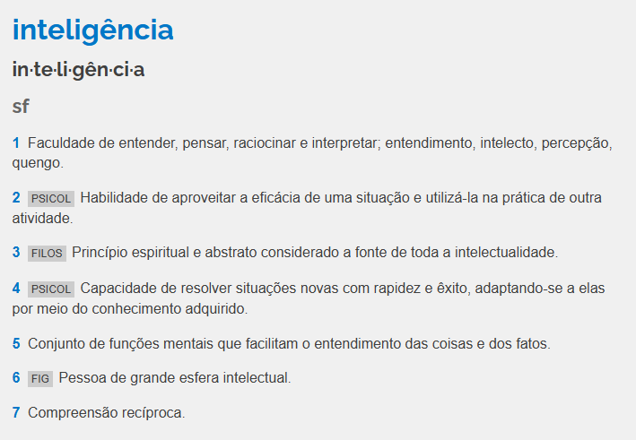
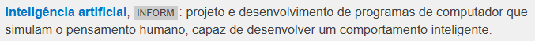
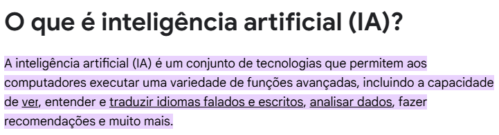
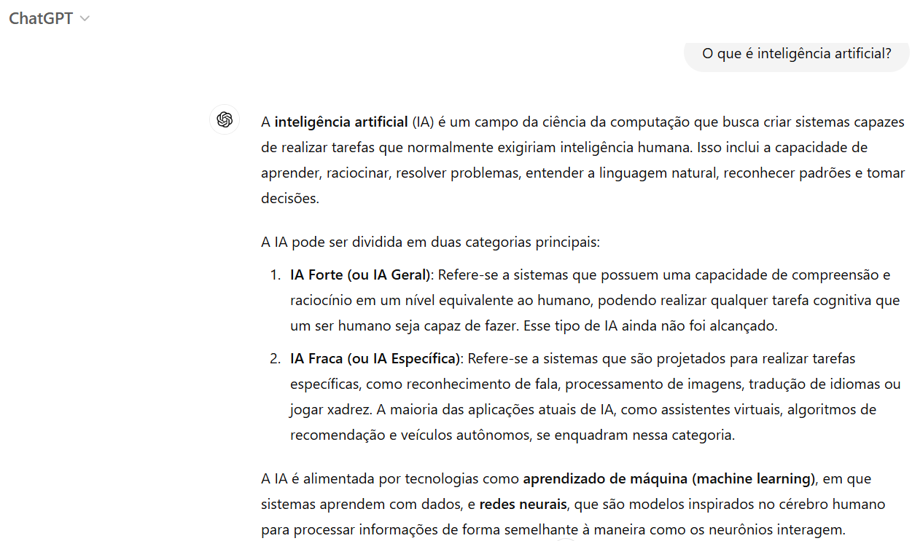
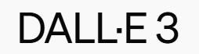
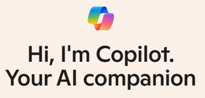
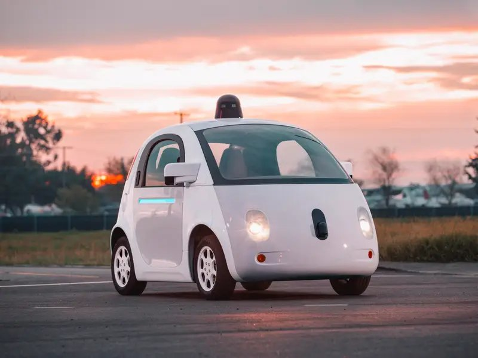
IAs generativas, recomendação de conteúdo, carros autônomos... a IA já faz parte do nosso dia a dia!
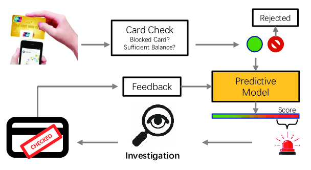
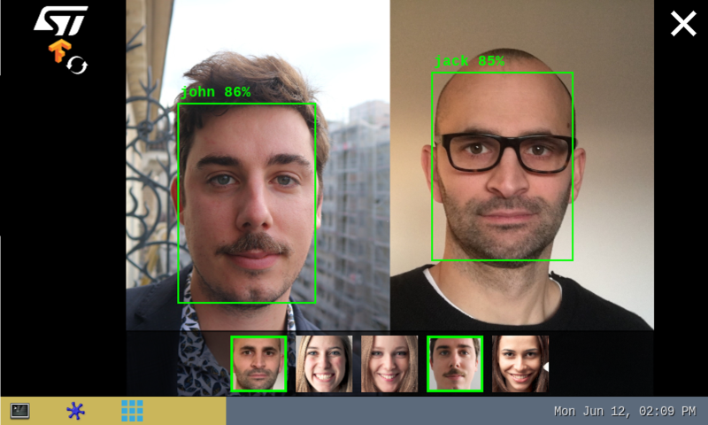
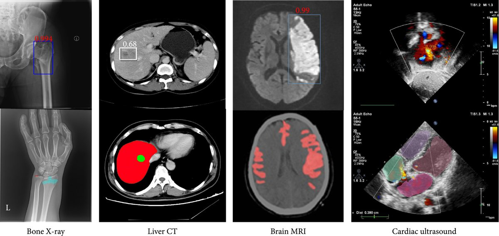
BIA — Bradesco
iFood no WhatsApp
Claro no WhatsApp
🎮 Jogos
🏭 Indústria
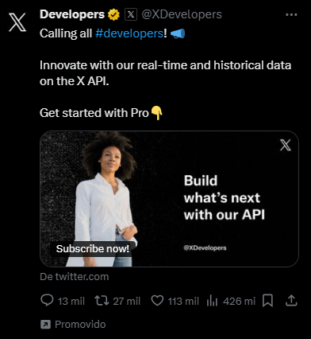
📣 Propaganda direcionada
🌾 Agricultura
Tudo começa com Alan Turing
🎬 O Jogo da Imitação (2014)
O computador do futuro seria capaz de aprender com a experiência. O caminho para isso era que ele fosse capaz de alterar as próprias instruções fornecidas por seu mecanismo.
Warren McCulloch (neurofisiologista) e Walter Pitts (matemático lógico) teorizaram:
O neurônio nada mais é que uma unidade de processamento que:
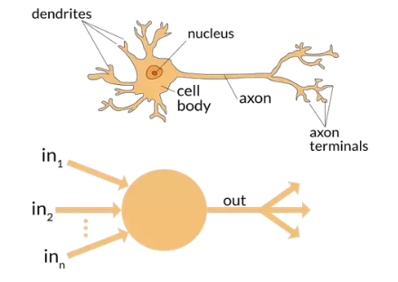
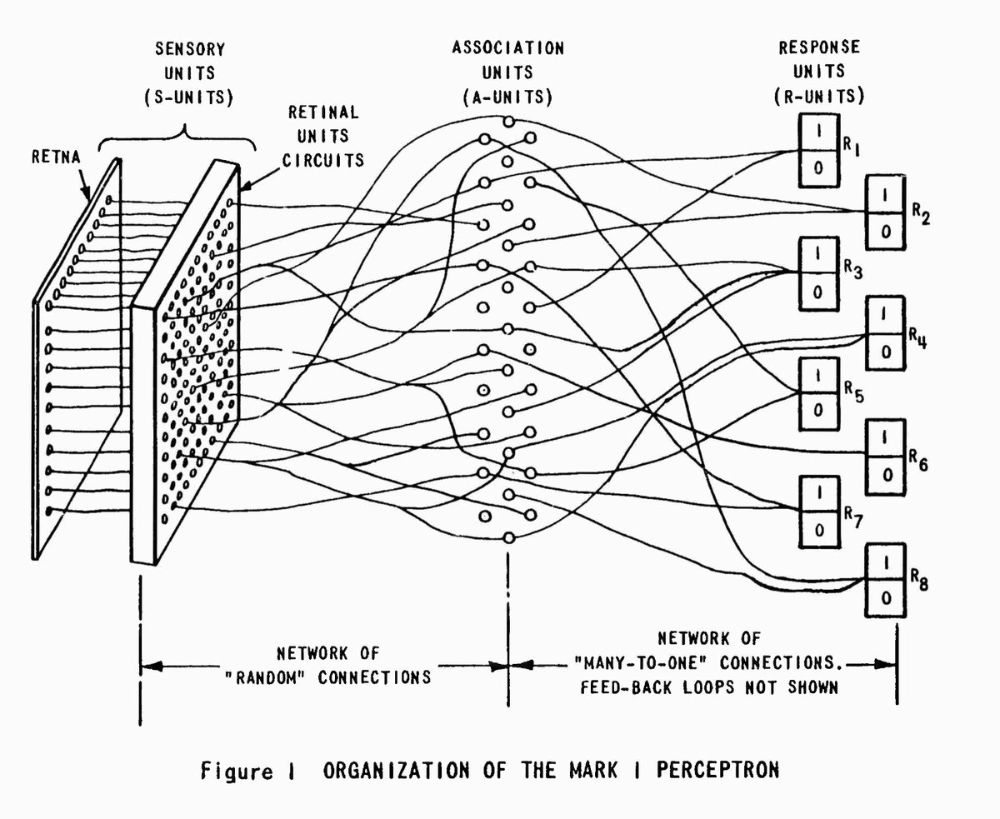
📺 YouTube: The Machine that Changed the World — The Thinking Machine
XORIF-ELSE, AND, OR etc.Assistente Google, Siri, Cortana, …
Sistemas especialistas: codificam os conhecimentos de especialistas com base em como eles tomam decisões
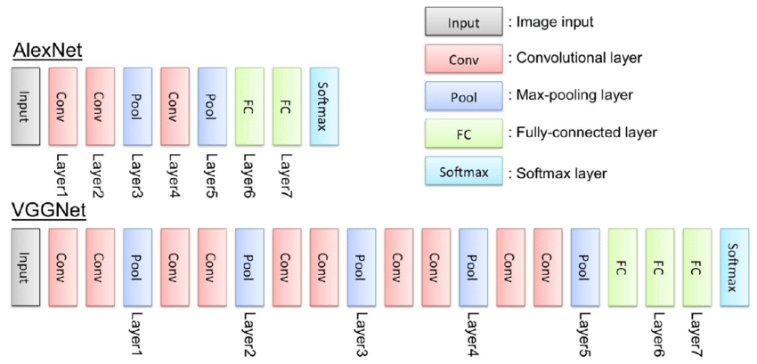
AlexNet (2012) e VGGNet (2014)
2018 GPT
2018 BERT: mecanismo de busca Google
2020 GPT-3
2023 GPT-4
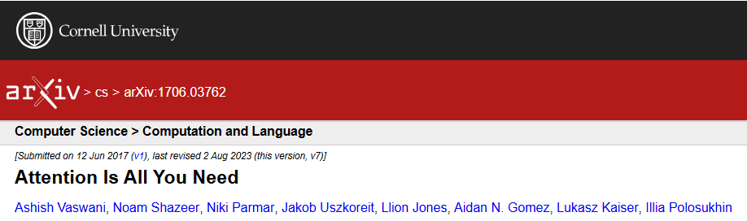
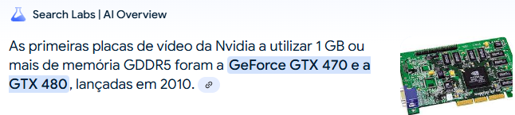
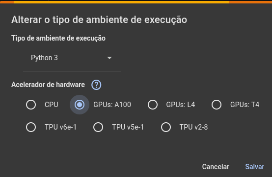
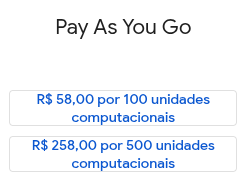
GPUs de datacenter são caras — o Colab dá acesso gratuito (limitado) para estudar! 🎓
Modelos de IA aprendem com dados — antes de treinar, precisamos limpar e
preparar esses dados com a biblioteca pandas.
.isnull(): verifica se os dados são NaN (not a number / erro).fillna(): substitui dados faltantes.drop_duplicates(): remove linhas duplicadasCNN para leigos: treine um modelo de visão computacional sem escrever uma linha de código!
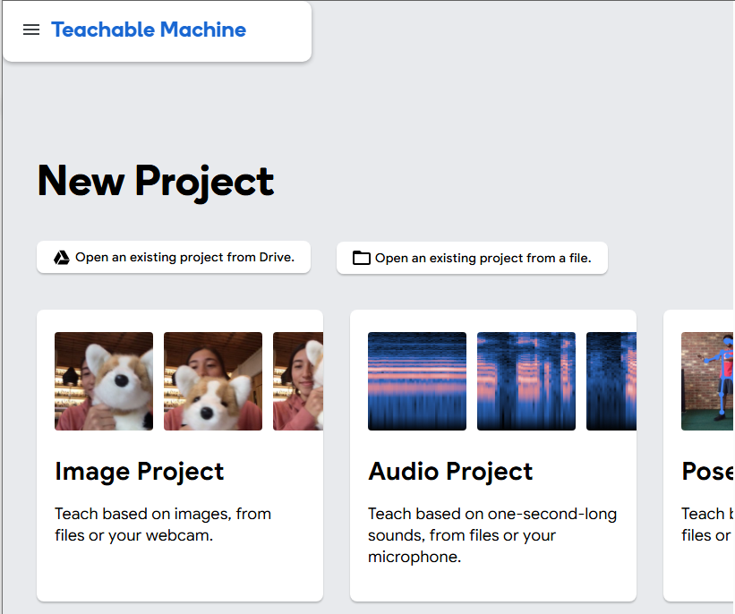
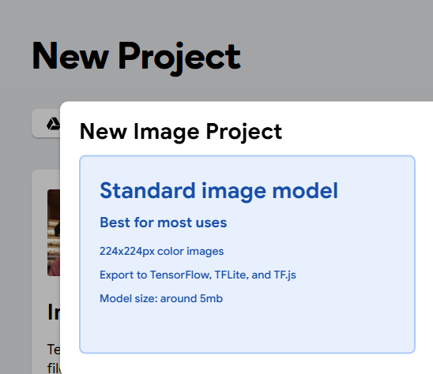
Projeto para classificar diferentes imagens. Exemplo: mostrar diferentes objetos (ou tipos de objetos) e fazer o modelo identificar o que é.
Passos:
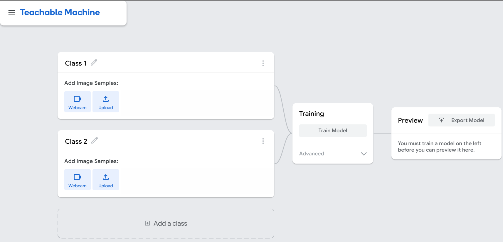
Sem webcam no computador? O celular resolve!
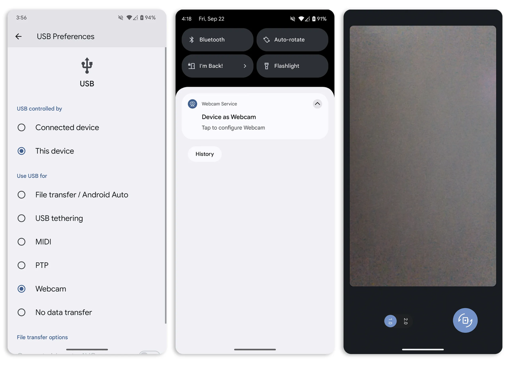
Próxima aula: Machine Learning